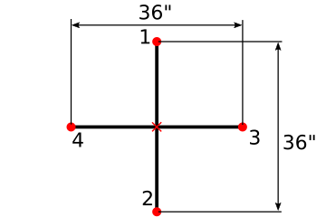

Creating quantitative data from an image¶
In this preview notebook, we will generate the location of board hits by clicking on an image displayed by matplotlib. We will repeat this process in the next Module_03-IVPs.
The first step is to import the libraries we need, the new functions here are
imread: a function that creates a numpy array that can be plotted with plt.imshow%matplotlib notebook: is a “magic” command that allows for an interactive matplotlib figure. There’s one extra plotting step of creating a figure before plotting withplt.figure()
import matplotlib.pyplot as plt
from matplotlib.image import imread
import numpy as np
%matplotlib notebook
Read in images target_01 and target_02¶
Now we read in target_01.jpg and target_02.jpg into variables im1 and im2. These are the images of the whiteboard. The black lines are perpendicular to each other and 36” (0.9144 m) long. We’ll display im1 to start.
im1 = imread('../data/target_01.jpg')
im2 = imread('../data/target_02.jpg')
plt.figure()
plt.imshow(im1)
<matplotlib.image.AxesImage at 0x7f11ce8745b0>
Capture mouse clicks on the frame¶
Okay! Here is where things get really interesting. Matplotlib has the ability to create event connections, that is, connect the figure canvas to user-interface events on it, like mouse clicks.
To use this ability, you write a function with the events you want to capture, and then connect this function to the Matplotlib “event manager” using mpl_connect(). In this case, we connect the 'button_press_event' to the function named onclick(), which captures the \((x,y)\) coordinates of the mouse click on the figure. Magic!
def onclick(event):
'''Capture the x,y coordinates of a mouse click on the image'''
ix, iy = event.xdata, event.ydata
coords.append([ix, iy])
fig = plt.figure(3)
plt.imshow(im1, interpolation='nearest')
coords = []
connectId = fig.canvas.mpl_connect('button_press_event', onclick)
Notice that in the previous code cell, we created an empty list named coords, and inside the onclick() function, we are appending to it the \((x,y)\) coordinates of each mouse click on the figure. After executing the cell above, you have a connection to the figure, via the user interface: try clicking with your mouse on the endpoints of the white lines of the metered panel (click on the edge of the panel to get approximately equal \(x\) coordinates), then print the contents of the coords list below.
coords
[]
The \(x\) coordinates are pretty close, but there is some variation due to our shaky hand (or bad eyesight), and perhaps because the metered panel is not perfectly vertical. We can cast the coords list to a NumPy array, then grab all the first elements of the coordinate pairs, then get the standard deviation as an indication of our error in the mouse-click captures.
Save your work to a file¶
In the next two code cells, we assign the clicks that were in the list coords to a numpy array hits1. Then, we save this array to the file hits_im1.npy. This is a numpy-readable file that we can load back into our workspace later as np.load('../data/hits_im1.npy').
hits1 = np.array(coords)
np.save('../data/hits_im1.npy',hits1)
plt.figure()
plt.imshow(im1)
plt.plot(hits1[:,0],hits1[:,1],'x')
#plt.plot(rings[:,0],rings[:,1],'s')
---------------------------------------------------------------------------
IndexError Traceback (most recent call last)
<ipython-input-8-13ad79c5447a> in <module>
2 plt.imshow(im1)
3
----> 4 plt.plot(hits1[:,0],hits1[:,1],'x')
5 #plt.plot(rings[:,0],rings[:,1],'s')
IndexError: too many indices for array: array is 1-dimensional, but 2 were indexed
Rinse and repeat¶
Now we will repeat the process for hits2 collecting the hit locations in target_02.jpg.
Capture mouse clicks on the frame¶
Once again we create event connections, that is, connect the figure canvas to user-interface events on it, like mouse clicks.
We connect the 'button_press_event' to the function named onclick(), which captures the \((x,y)\) coordinates of the mouse click on the figure. Magic!
fig = plt.figure()
plt.imshow(im2, interpolation='nearest')
coords = []
connectId = fig.canvas.mpl_connect('button_press_event', onclick)
The \(x\) coordinates are pretty close, but there is some variation due to our shaky hand (or bad eyesight), and perhaps because the metered panel is not perfectly vertical. We can cast the coords list to a NumPy array, then grab all the first elements of the coordinate pairs, then get the standard deviation as an indication of our error in the mouse-click captures.
hits2 = np.array(coords)
Save your work to a file¶
In the next two code cells, we assign the clicks that were in the list coords to a numpy array hits2. Then, we save this array to the file hits_im2.npy. This is a numpy-readable file that we can load back into our workspace later as np.load('../data/hits_im2.npy').
np.save('../data/hits_im2.npy',hits2)
plt.figure()
plt.imshow(im2)
plt.plot(hits2[:,0],hits2[:,1],'x')
Set the scale to convert pixels -> meters¶
In the next two imshow commands, we will choose the corners of the target shown below as location 1, 2, 3, and 4 and the center we will determine from the average locations of locations 1-4 in \(\times\) .

We use the same onclick function to create the corners1 array for target_01.jpg and corners2 for targete_02.jpg.
fig = plt.figure()
plt.imshow(im1, interpolation='nearest')
coords = []
connectId = fig.canvas.mpl_connect('button_press_event', onclick)
corners1 =np.array(coords)
fig = plt.figure()
plt.imshow(im2, interpolation='nearest')
coords = []
connectId = fig.canvas.mpl_connect('button_press_event', onclick)
corners2 =np.array(coords)
Set the absolute position and scale results¶
With the corner locations save in the corners1 and corners2, we locate the target center as the average x-position and average y-position of all four chosen points. Below, we plot the corners and centers for both images, you can change the imshow command to check target_01.jpg and target_02.jpg.
plt.figure()
center1_x = np.mean(corners1[:,0])
center1_y = np.mean(corners1[:,1])
center2_x = np.mean(corners2[:,0])
center2_y = np.mean(corners2[:,1])
plt.imshow(im1)
plt.plot(corners1[:,0],corners1[:,1],'o')
plt.plot(corners2[:,0],corners2[:,1],'s')
plt.plot(center1_x,center1_y,'+')
plt.plot(center2_x,center2_y,'x')
plt.plot(1500,2500,'s')
plt.xlabel('y-axis')
plt.ylabel('x-axis')
You can see above that each image will have a different scale to convert from position in pixels to position in meters. This is the case for all quantitative image data, every time a camera is repositioned you will have a new scale to convert pixels to meters.
Below, we use the 0.9144-m distance between corner locations to set oour im1_scale and im2_scale for target_01.jpg and target_02.jpg, respectively.
d1=np.sqrt((corners1[0,0]-corners1[1,0])**2+(corners1[0,1]-corners1[1,1])**2)
d2=np.sqrt((corners1[2,0]-corners1[3,0])**2+(corners1[2,1]-corners1[3,1])**2)
im1_scale = 0.9144/np.mean([d1,d2]) # in 0.9144 meters/ pixel distance
print('target_01.jpg has conversion {:.2} meter/pixel'.format(im1_scale))
d1=np.sqrt((corners2[0,0]-corners2[1,0])**2+(corners2[0,1]-corners2[1,1])**2)
d2=np.sqrt((corners2[2,0]-corners2[3,0])**2+(corners2[2,1]-corners2[3,1])**2)
im2_scale = 0.9144/np.mean([d1,d2]) # in 0.9144 meters/ pixel distance
print('target_02.jpg has conversion {:.2} meter/pixel'.format(im2_scale))
Final Data preparation¶
So far, we have
Chosen hit points on two images
Chosen calibration points on two images
Determined a local reference in each image i.e. point (0,0)
Determined the scale for each image i.e. convert pixels -> meters
The final data preparation is to convert the chosen hit points on the two images into (x,y) locations in meters. We will save some other information in case we need to check our work later (part of creating reproducible research).
The first step is to plot our scaled and centered data from targets 01 and 02. We can also plot the mean location of our hits from the class.
hits1=np.load('./hits_im1.npy')
hits2=np.load('./hits_im2.npy')
center_hits1=hits1
center_hits1[:,0]= hits1[:,0]-center1_x
center_hits1[:,1]= hits1[:,1]-center1_y
center_hits2=hits2
center_hits2[:,0]= hits2[:,0]-center2_x
center_hits2[:,1]= hits2[:,1]-center2_y
scaled_hits1 = center_hits1*im1_scale
scaled_hits2 = center_hits2*im2_scale
plt.figure()
plt.plot(scaled_hits1[:,0],scaled_hits1[:,1],'x')
plt.plot(scaled_hits2[:,0],scaled_hits2[:,1],'x')
plt.plot(np.mean(scaled_hits1[:,0]),np.mean(scaled_hits1[:,1]),'o',label='mean hit target_01')
plt.plot(np.mean(scaled_hits2[:,0]),np.mean(scaled_hits2[:,1]),'o',label='mean hit target_02')
plt.legend()
The locations look good so far, now we export the data to a csv file so we can access it later.
The csv file will save the following information:
throw # |
x position (m) |
y position (m) |
picture x position (pixel) |
picture y position (pixel) |
target x position (pixel) |
target y position (pixel) |
image # |
|---|---|---|---|---|---|---|---|
arbitrary hit # |
centered x position |
centered y position |
absolute x pixel location |
absoluter y pixel location |
target center x pixel location |
target center y pixel location |
either 1 or 2 for target_01.jpg or target_02.jpg |
hits1=np.load('../data/hits_im1.npy')
hits2=np.load('../data/hits_im2.npy')
file = open('../data/target_data.csv','w')
file.write('throw #, x position (m), y position (m),')
file.write('picture x position (pixel), picture y position (pixel),')
file.write('target x position (pixel), target y position (pixel), image #\n')
for i in range(0,len(scaled_hits1)):
file.write('{},{},{},'.format(i,scaled_hits1[i,0],scaled_hits1[i,1]))
file.write('{},{},'.format(hits1[i,0],hits1[i,1]))
file.write('{},{},{}\n'.format(center1_x,center1_y,1))
for i in range(0,len(scaled_hits2)):
file.write('{},{},{},'.format(len(scaled_hits1)+i,scaled_hits2[i,0],scaled_hits2[i,1]))
file.write('{},{},'.format(hits2[i,0],hits2[i,1]))
file.write('{},{},{}\n'.format(center2_x,center2_y,2))
file.close()
Congratulations¶
Now you can do some statistics on accuracy and precision of the class by loading the csv into a pandas dataframe.